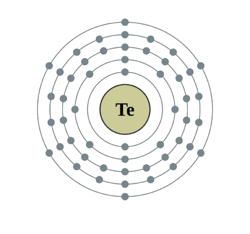

Tellurium
Tellurium
is a brittle, silvery-white metalloid used in semiconductors and alloys.
Atomic Structure

Atomic Information
Property
Value
Atomic Number
52
Symbol
Te
Atomic Mass
127.60 u
Electron Configuration
1s
2
2s
2
2p
6
3s
2
3p
6
3d
10
4s
2
4p
6
4d
10
5s
2
5p
4
State at Room Temperature
Solid
Uses of Tellurium
Used in alloys to improve durability and strength.
Used in thermoelectric devices to convert heat into electricity.
Used as a semiconductor material.